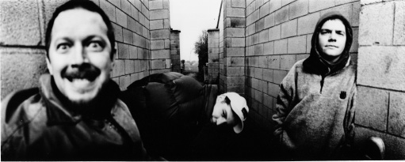
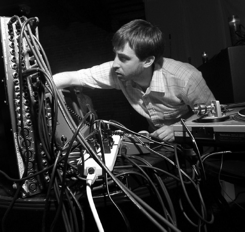

The Myth of Techno Collides with Reality, 1991–2001
WE ONLY DID A HANDFUL OF GIGS AS “THE KNOB-TWIDDLERS” AND THEN ALL OF A SUDDEN WE ASSUMED JOHN, PAUL, GEORGE, AND RINGO [STATUS] ON STAGE. WE TOOK IT TO AMERICA—AND AMERICANS MAKE YOU WORK LIKE FUCK, DON’T THEY? THEY STAND THERE AND THEY GO “ENTERTAIN ME!”
DARREN PARTINGTON (808 STATE)
I DON’T FEEL ANY KINSHIP STYLISTICALLY OR BUSINESS-WISE WITH THE “ELECTRONICA” BOOM, DESPITE THE FACT THAT, WITHOUT IT, I’M NOT SURE WE WOULD EXIST.
SAM VALENTI IV, OWNER AND A&R, GHOSTLY INTERNATIONAL
In the early 1990s, the rave scene dramatically heightened techno’s profile, exposing it to mass audiences in Europe and, later, the United States. In Detroit, artists responded by heading back underground, choosing to avoid mainstream co-optation and compromises with major labels. At the same time, increasing numbers of multinational artists came to the fore-front outside the United States, bred in a culture much more saturated with raves and the sounds of techno. Surprisingly, many of these artists met with success as they crisscrossed the globe and “crossed over” into pop.
For some European musicians, assimilation into the established industry came with seemingly little effort. One of these was Manchester’s 808 State, a group that managed to integrate the lengthened time frames and repetitive structures of dance music with the framework and energy of live rock ’n’ roll.
808 State was formed in 1988 by Graham Massey (an ex-funk player with the band Biting Tongues), Gerald Simpson, and Martin Price, owner of Manchester’s Eastern Bloc record shop. It was at Price’s record shop that Massey and Simpson had started recording as the Hit Squad, one of the many British hip-hop crews embracing acid house at the time. Eventually, Massey and Simpson started taking conceptual cues from Price, and the three began collaborating as 808 State.
808 State’s intense Newbuild EP, released in 1988, was next-generation English acid house, more direct and far more sinister than the sounds coming from Baby Ford and S’Express down in London. After a falling-out concerning payment for his work on the album (and 808’s subsequent success with “Pacific State,” a song he cowrote), Simpson left 808 State in 1989 to set out on his own. Massey filled the empty slot by enlisting Darren Partington and Andy Barker, previously of another Manchester hip-hop crew called the Spinmasters.
Now that they were a four-piece outfit (Massey, Price, Partington, and Barker), 808 State began to grow in a very band-like way.1 Says Partington, “Basically we’re a production team that appears to be a band onstage. We’re not an image-based band; we change all the time—a record label’s nightmare.” Still, once “Pacific State” had been released on the 1989 Quadrastate EP, 808 State knew that its path would not be of the “faceless techno producer” ilk.
The American hip-hop label Tommy Boy showed its keen ears and long-range thinking by signing 808 State in 1990, early in the group’s career. According to Steve Knutson, a Tommy Boy executive who helped bring the group to the United States, “At the time that those records came out, the word ‘techno’ really wasn’t even used [in the United States]. 808 State was looked [on] as more of an alternative/dance type of group.” This put 808 State in an entirely different context than it had been in Europe, where it had been framed as an extension of Manchester’s rave and techno scene. Instead, Tommy Boy placed 808 State next to more guitar-oriented groups onstage and in record bins, separating the group from both the Detroit and U.K. techno scenes that had inspired it—not that this detracted from the group’s excitement about being signed to the label. Says Partington, “When we got to America, like about 1989, we were on Tommy Boy. We [had] collected Tommy Boy as DJs—they pioneered a specific sound. People still feel that passionate about the label—and we were signed to it!”

GRAHAM MASSEY (LEFT), DARREN PARTINGTON (MIDDLE), AND ANDY BARKER (RIGHT) OF 808 STATE, LOOKING EVERY BIT AS ARTY AND ENERGIZED AS THEIR MUSIC. (Phil Knott)
Though 808 State was named after the quintessential hip-hop drum machine—the Roland TR-808—the group made no attempt to disguise its techno roots. There were even strains of Cybotron’s “Techno City” woven into the fabric of “Donkey Doctor” on its first proper album, 1989’s 808:90.2 These references became less and less obvious, however, as the group’s productions became more and more ornate. 808 State was determined to grow into the alternative market and its role as a techno “band,” though there wasn’t really any precedent as such. And like many other techno producers of the early 1990s, 808 State would run into puzzled audiences and critics alike as it pushed the boundaries of what a techno album should be.
The group’s second offering, 1991’s Ex:El, was even more ambitious, jumping from whirling, elaborate vignettes like “Nephatiti,” to modern mood-pop featuring Bernard Sumner of New Order (“Spanish Heart”) and Icelandic singer-songwriter Björk Gudmundsdóttir (“Ooops”). “At the time, Björk was in the Sugarcubes,” says Partington. “She was the queen of indie. . . . Back to the purists [who would say], ‘You don’t do that, you don’t bring people like her in here with us!’” Given Björk’s strong subsequent support of techno, it’s clear that 808 State had a knack for finding vocalists and musicians to complement the genre. “[It was just] forward thinking,” says Partington. “If you try to force people to buy it [techno]—you have to invent this whole [new] subculture to go with it.”
Another European band that assimilated surprisingly easily into the mainstream was England’s LFO,3 also signed to Tommy Boy in 1990. LFO had helped define the Sheffield “bleep and bass” era with a much simpler and less ornate sound than that of 808 State. When it came to marketing LFO, Tommy Boy’s emphasis was placed purely on the sounds of the group’s recordings—specifically its namesake low-frequency bass vibrations, evident on the rumbling 1990 single “LFO” and 1991’s “We Are Back.” Tommy Boy even went as far as placing semi-serious stickers on LFO’s album labels and packaging, stating, “BEWARE OF BASS. Warning: Tommy Boy Music, Inc., its affiliates, and licensees disclaim any and all liability for speaker damage resulting from the playback of this sound recording.” As Knutson recalls: “We [Tommy Boy] didn’t even promote or market [LFO] to the more alternative type of dance audience. What we did was market it more to the Miami Bass [a grittier, sometimes salacious variant of electro] and the southern audience that was still really sympathetic to the sounds of [Afrika Bambaataa’s] ‘Planet Rock.’ And, even though it was mostly instrumental stuff, we ended up selling over thirty thousand LFO albums.”
N-joi—also from England—was signed by RCA Records in 1991 and helped write the script for crossover success in the United States, especially with their sampled rallying cries of “Let the bass kick” and “Drop the bass now!” (both from N-joi’s 1991 EP Mindflux). As one of the first groups to combine techno compositions with a wealth of sampled breakbeats, N-joi found itself in the techno/hip-hop fringe that grew into what became known as hard core. The group’s exposure in the United States, however, was limited to only one EP—almost miniscule when compared with other crossover acts, such as the Prodigy.
The Prodigy’s founder, Liam Howlett, like so many other English techno and acid house fans of the early 1990s, was grounded in the fundamentals of hip-hop. As a former “brit-hop” DJ himself, it was natural that Howlett would begin joining the breakbeat to up-tempo house music in his own compositions. What Evil Lurks, released in 1990, got the group’s trio (Howlett, Leeroy Thornhill, and dancer Keith Flint) signed to XL Records, a U.K. label. The Prodigy’s second single, “Charly,” was its watershed moment, codifying its breakbeat approach and scoring a No. 1 hit on the U.K. National Dance Chart and a No. 3 slot on the U.K. Gallup Top 40 in 1991. But success came at a small price—ravers initially judged the scattershot rhythms of “breakbeat house” (and the many juvenile “Charly” clones) as anathema to the steady four-count bliss they had enjoyed since 1988’s “Summer of Love.” The U.K. dance music magazine Mixmag even went as far as asking the following on a 1992 cover: “Did ‘Charly’ Kill Rave?”
This division between ravers and breakbeat fans would eventually widen to become a stumbling block for many other groups as the fledgling breakbeat sound evolved into modern jungle and drum & bass. The Prodigy, however, managed to stay above the fray, riding its new image as dance music outlaws to continued success in the United Kingdom. It was no small accident that the group finally broke through to U.S. audiences when it donned punk-era trappings and promoted Flint from dancer to vocalist/front man. Aside from brief commitments early on, however, U.S. record labels didn’t know quite what to do with the Prodigy—until Madonna gave it the outlet it needed on her Maverick label in 1997. The rest is recent “electronica” history: the group’s 1997 album The Fat of the Land, which featured the monster hit singles “Firestarter” and “Breathe,” quickly went platinum, selling more than two million copies in less than two years. However far removed the Prodigy may be from a definition of “techno,” the group is surely one of electronic dance music’s biggest success stories.
However, between 1993 and 1997 the rave scene found prolonged success in its expansion on the European continent, leaving the United Kingdom in the lurch. While many U.K. labels were forced to fold, at least one survived—thanks in part to its dedicated A&R efforts. Sheffield’s Warp Records had begun redefining itself in 1993, when it began releasing records in what it called the Artificial Intelligence series. With this series, Warp hoped to comment on the concept of music as artificial life—from something as simple as a computer virus or “bot” to the larger concept that techno has a life of its own and perhaps an agenda larger than our own.
The Artificial Intelligence series started with a compilation by the same name, introducing new audiences to the work of Aphex Twin, Autechre, Black Dog Productions, B12, Richie Hawtin, Speedy J, and the Orb. Several of these artists had taken inspiration from the melodic wing of Detroit techno and the recordings of Derrick May and Carl Craig. For a lot of listeners, particularly those who had lost the taste or stamina for hard-core techno parties, the Artificial Intelligence records were a perfect antidote.
By about 1994—not long after the release of the series—the phrase “artificial intelligence” had become a generic term, used to represent a more sophisticated rejection of the rave scene. Variants of the term were “intelligent techno” and “intelligent dance music,” both of which originally carried the same sentiments as “artificial intelligence” but evolved into a kind of elitist badge of honor for those who enjoyed electronic dance music but weren’t keen on the more populist aspects of its culture.
Despite this negative etymological trend, however, the Artificial Intelligence series broke through to U.S. audiences, helping them start to come to grips with techno. Licensed to the American TVT label (original home of Nine Inch Nails and current owner of Wax Trax records), most of the series was introduced to the American public in 1993 and 1994. By this time, the U.S. industry and press had had more time to think about ways to present and market this vein of techno, and despite poor sales (reportedly less than five thousand copies per release), Artificial Intelligence received a significant amount of press coverage. “Everybody talks about those records and how they were the first techno records they heard,” says TVT’s director of A&R Adam Shore. “They didn’t sell that well, but at least they were out there. The Detroit techno CDs weren’t out there, the Chicago house CDs weren’t out there, but these were.”
Though not quite as many bands were exported with the same success as U.K. counterparts, pockets of Germany’s electronic music scene began to change. What some fans in America would recognize as “industrial” music morphed into an electronic dance music scene that today could be considered the functional capital of techno.
Following a huge peak, Kraftwerk’s influence on rock—Bowie’s “Berlin” trilogy of albums—another sound known as “techno,” or sometimes “tekno,” emerged in Frankfurt, largely credited to Talla 2XLC (Andreas Tomalla). “Talla” is a prolific artist who also ran the Zoth Ommog label, founded the “Technoclub” in the Dorian Gray, and kicked off the German techno magazine Frontpage. He was also a member of the group Moskwa TV, who released a single called “Tekno Talk” in 1985. Unlike Detroit techno, however, this “tekno” was more connected to “hi-NRG” and “electronic body music (EBM)”—styles that were strictly European.
As Europe began redefining itself in 1989 and 1990, its youth constructed a new underground dance music scene, with Detroit techno serving as a chief influence. In England, the rave scene was at its peak, helping the English erase their inhibited past one ecstatic night at a time. In Germany, there were larger reasons to celebrate. The collapse of the Berlin Wall in November 1989 gave techno “Renaissance man” Dimitri Hegemann and his cohorts on the Interfisch label a window of opportunity, one that was larger and more literal than that which Detroit’s youth had taken advantage of in the early 1980s.
The area around the wall that had traditionally separated East from West still existed as a sort of “no-man’s-land,” and the buildings in the area remained largely unoccupied through the nearly year-long reunification process. By 1991, however, Potsdamer Platz had a new resident: Hegemann and Co. While searching for a new club location, the former Interfisch crew had stumbled on a series of underground rooms with iron bars, which had once served as vaults for the now-defunct Wertheim department store (once the largest store in Europe). The group’s new club became known as Tresor, a German word meaning “vault” or “safe.” It was an unlikely but incredible place to start. Recalls Hegemann, “We were the place where East and West kids came together, musically. We found our style—it was definitely oriented toward minimal Detroit sounds, and then after a year and half we had our own crowd.”
Tresor brought new life to the careers of many Detroit artists. Santonio Echols, Eddie Fowlkes, and Blake Baxter were among the club’s first bookings, alongside established Berlin DJs such as Dr. Motte and Tanith. Tresor, the label, was also built on a few dozen releases from Detroit, starting with the 1991 X-101 project from Underground Resistance.
Hegemann was intent on building a connection between Berlin and Detroit, as evidenced from the 1993 compilation Tresor II: Berlin-Detroit: A Techno Alliance, made available to U.S. audiences through NovaMute. There were even plans to open a Tresor club in Detroit, which eventually fizzled out. Says Hegemann, “Musically, we had this help from Detroit, and after a while we thought we’d give something back. I thought it was a good challenge. There are so many possibilities [in Detroit] and I thought something could be done. Why is Detroit still asleep?”
By the mid-1990s, Germany was close to defining its own style of techno, as the Detroit, Frankfurt, and Berlin definitions began bleeding into one another. Still, the controversy over the style’s ancestry—whether it stemmed from “tekno” or Detroit’s “techno”—periodically reared its ugly head. As Tresor’s booking agent, Alexandra Dröner, explains, “That [spelling with a k] was kind of a joke—to show with a word the hard-core quality [of German techno]. For us it was a joke: ‘Yeah, he played tekno with four k s!’ Years later, I became very militant [about techno’s Detroit origins] and so I began to [pronounce it with the English ch and] say ‘tesshno’ again.”
The crew at Hard Wax Records, another hub of Berlin’s techno scene, wasn’t exactly militant about the music’s origins, but they held the principles of Detroit techno in high regard—especially those communicated to the store via the music (and faxed manifestos) of Underground Resistance. Started in 1989 as a no-frills record store in Berlin’s Kreuzberg district, Hard Wax is probably best known for being at the center of one of Berlin’s most interesting techno movements: the legendary group Basic Channel. Started by store owner Mark Ernestus and Moritz von Oswald, originally a percussionist and later part of the Tresor camp, the group’s reputation stemmed from its ability to hide in plain sight, never being quoted or photographed yet remaining very much in the spotlight from 1993 to 1994.
Basic Channel’s music was a near-total reconstruction of techno and house: starting from the principles of Jamaican “dub” and working back to the four-count beat conducive to club play. Records like “Phylyps Trak,” “Quadrant Dub,” and “Octagon” (all released in 1994) incorporate basslines that sound like pond ripples and beats buried under a mile of gauze—even the ultra-distressed typography of the label art reflects a murky composition. Basic Channel’s ideas would go on to inspire the work of Vainquer, Porter Ricks, Monolake, and a host of other innovative German techno artists.
Germany’s growing scene in the early 1990s was the beginning of techno’s decentralization. From this point on, one could never predict where the next influential label or artist would emerge. Ironically, as much as it spread from country to country, techno began to create its second logical center in Berlin (after Detroit). Berlin has also swiftly become Germany’s music capital. Starting with Hegemann’s efforts, the rise of German hip-hop, the move of Universal Music from Hamburg in 2002 and many artists streaming into the city from other countries—you can begin to understand its rise to cultural prominence.
Although not necessarily chronologically “next,” two countries whose scenes grew organically and most rapidly were Belgium and the Netherlands. The latter did so almost from scratch, without the same kind of precedents for “techno.” For the first half of the 1990s, new Dutch techno artists such as Terrace (Stefan Robbers) emphasized beauty through technology, mirroring Detroit’s most melodic output. This would stand in stark contrast to the faster, noisier sound of “Gabber” that followed soon after.
One antidote to that apocalyptic trend was Marsel Van Der Wielen’s Delsin label, founded in 1996. Initially an outlet for his own work (under the Peel Seamus alias), Delsin took many ingredients of Detroit techno—strong emotional contrasts, star-sailing chords, and so forth—and built a roster of artists more or less around this aesthetic.
Another way Van Der Wielen set his label apart was in the visual communication on his record art and Web presence. Early on nearly everything had a black-and-white treatment, blending in mystery and cheeky, sci-fi naïveté—sort of like a self-effacing version of Underground Resistance’s early twelve-inch singles. Hearing Van Der Wielen explain his specific Detroit influences, one can see how he might have divined this approach.
I grew up with [Carl Craig’s] Retroactive and Planet E from their very beginning. They were really a landmark for me. Both the wide approach [to the music] as the elusive artwork which came with many EPs. The 69 and the Piece releases, for example, were and are so far from what you would call a blueprint of Detroit techno. They were all about creativity. Also how [Jeff Mills’s] Axis was run, [where] each EP seemed a tight strong concept in combination with the artwork . . . gave that label a very strong image and appeal.
Delsin, like Plus 8, was also global very early on. In fact, for a Dutch label supposedly taking cues from Detroit, it odd to see that Van Der Wielen released records from only two Detroit artists, and only a half dozen or so from the Netherlands. Delsin never went out of its way to fulfill the Detroit legacy, and perhaps that is why so many found the label to be so authentic. Still it is an odd thing to be considered a standard bearer for a genre when its home base is still actively producing music.
The Belgian influence on techno was far less gradual, adopting and adapting the Detroit sound about as quickly as England in roughly the same time period. What gave it source material and continuity was the growing Ghent-based label R&S Records (named for owners Renaat Vandepapeliere and Sabine Maes), a steady source of energetic techno for the rest of Europe. R&S moved away from Belgium’s focus on new beat, releasing dozens of influential techno records in only a few years. These included the R-Tyme project in 1989, featuring Derrick May and D-Wynn; the classic single “House of God” by Chicago’s DHS in 1991; and two groundbreaking EPs from Aphex Twin in 1992.
The Elypsia label entered the mix in 1996, a Brussels-based label that released several albums from Detroit artists, including Dark Comedy (Kenny Larkin), Fade to Black (Jay Denham), and Scan 7. Charleroi artist Fabrice Lig (real name: Fabrice Ligny) recorded for the label during this time frame under the name “Bug Orchestra.” Lig was inspired by Detroit early on, hearing Inner City’s “Big Fun,” but would become connected to its scene several years later with his remix “Banjo” by E-Dancer—yet another Kevin Saunderson alias. “Belgium is the kingdom of Hard Techno,” he proclaims. “And I don’t have any place on this scene . . . in other countries you have some other place where you can find other kinds of electronic music. It was really rare in Belgium.”4
In contrast to Lig’s account, the nascent European techno scene in the early 1990s was a bit more open and dynamic. Together with the Netherlands, the United Kingdom, and Germany, Belgium completed the central structure of European support and enthusiasm. “By 1990–91, things became more interesting,” says Neil Rushton. “Instead of three people in Detroit, you suddenly had twenty-three people making techno, in Belgium, in Sheffield.”5
In varying ways, these countries held a torch for Detroit—not just its techno music but the concept of the city that was encoded in so much vinyl. Ideas set in motion by Juan Atkins and Cybotron, promoters pumping life into historic sites and forgotten spaces, and, of course, actual record label headquarters and artist dwellings. This love for the city was but one aspect discussed on 313, the Detroit Techno Mailing List.6 It was there that fans from these countries and dozens of others learned, shared, and obsessed over Detroit and its music.
Like all long-distance love affairs, there has to be a moment where the need for intimacy overwhelms. For Detroit, this meant that the techno “massive,” as it were, began to visit. Yes, the capital of the post-industrial Midwest was becoming a vacation destination—for young people. 313 was an early facilitator, as many music mailing lists with similar early 1990s histories were functional extensions of the rave community. Whereas most are very local in scope, such as sf-raves, mw-raves, and ne-raves (San Francisco, Midwest, and Northeast respectively), 313’s reach is global. Bits finally gave way to atoms in December 1999, where a party by and for 313 list members was held in the Detroit suburb of Redford. In attendance were several international visitors, including Otto Koppius, Hans Veneman, Wibo Lammerts, and Klaas-Jan Jongsma—all musicians and DJs who made the trek from the Netherlands.
After the trip, Veneman gathered up all of the group’s photos and posted them on a Web site served from his home computer. They shared them among the 313 list community, as well as “lowlands” (a Dutch techno culture list) and didn’t think much more about the trip—that is, until they returned in 2000 after hearing “about Carl Craig doing a festival in May.” Between these two trips, some friend or acquaintance in Detroit had dubbed the Dutch contingent “Techno Tourists,” a name they embraced and reserved on the Web as “technotourist.org.”
What drew Veneman and crew back to Detroit in 2000 was, of course, a techno music event. But not some grassroots affair in tents pitched on rented farm property—this was the year of the very first Detroit Electronic Music Festival (DEMF). Established by Pop Culture Media and led by Carol Marvin (organizer for the Ford Detroit International Jazz Festival and Detroit-Montreux Jazz Festival before it), DEMF was planned to be the first major, mainstream showcase for electronic music in the city. Its impact was bigger and deeper than anyone could have imagined.
When the sun set on the first Saturday, enthusiasts, suburban visitors, city residents, and random passersby flocked to the free festival, converging on Stacey Pullen’s DJ set on the main stage. Hart Plaza was at or near capacity. The weather was perfect. Downtown Detroit came alive with strange, yet familiar sounds. What everyone slowly realized was that they were witnessing and participating in the reunion of the city with its long-lost, homegrown Wunderkind. Detroit finally “got” techno—it was emotional, magical, and as hyperbolic as you might imagine.
The reported numbers by city officials and the police department for that first weekend were a bit off the charts (as high as 1.5 million!), but it would take several years to come down from the high of such a successful launch to scrutinize attendance. It certainly felt like a million people had decided to soak up the music on the waterfront all at the same time. Emotion got the better of mathematics and logistics—quite the poetic techno ending to an improbable story.
The following year brought with it a new plot development. Though she had chosen Carl Craig to act as “artistic director” of the festival in 2000, Carol Marvin decided to fire him just before the opening day of the second DEMF. Marvin cited that Craig did not fulfill the terms of his contract, and Craig in turn sued (and lost) for defamation of character and breach of contract. But Craig seemed to have won “the popular vote,” as banners and stickers bearing the slogans “I Support Carl Craig” and “DEMF = Carl Craig” were visible all weekend. And, to this day, the artistic direction and lineups of the first two festivals are regarded by many as the best.7 “Even with all the politics and all the bullshit—the typical Detroit politics—I would never change it,” said Craig. “It was great.”8
Technotourist.org grew like a weed during the next festival, largely because it had decided to compile and host the dozens of after-parties that dotted the downtown map. Though the phrase “techno tourist” never caught on in a big way, it is a useful concept to replace that of the tribal or nomadic “raver.” They created a blueprint for the next generation of techno fans, out to collect, overdocument, and share experiences. It might be reaching to say that they alone connected techno to the power of Web 2.0, but if nothing else, the techno tourists helped make it easier for more international visitors to descend on Detroit. Veneman remembers crossing into Canada and back during one of the festival weekends, and how literally otherworldly Detroit would become: “When I was the only Dutch guy and had to talk to customs—difficult, difficult. But we once went with two Dutch people, Ines from Germany and Jason from Australia. [Border security] asked if any of us were from outside the United States. We told him our nationalities and got a completely blank stare back. ‘Drive on, please,’ he said.”
Incredibly, the music festival has lasted ten years, despite three changes in leadership and the woes of attracting and securing sponsors. In 2006 it might have fallen apart for good, if not for another entity born of Detroit’s underground music scene. On the heels of the 2005 festival (then called F.U.S.E.:IN), producer Kevin Saunderson resigned with only a few months left before the next event. On March 23, the city gave the reins to Paxahau, who had produced the underground stage the prior year.
The official announcement of Paxahau as producer created almost as much excitement as when the official lineups are announced. The team was congratulated by many at that year’s Winter Music Conference in Miami, and a few parties in Chicago that weekend stopped the music to announce Paxahau’s involvement. Detroit’s party scene had “arrived” in the same way techno artists did in 2000. Still, there was a lot of logic to the city’s decision, given Paxahau’s reputation and track record of handling increasingly larger events, such as the five parties they produced in and around the 2006 Super Bowl. Paxahau’s Jason Huvaere was excited for sure, but also a textbook definition of “cautiously optimistic”: “There were a lot of things that had to be calculated with great accuracy, or we were going to join the club [of short-lived festival producers]. We filed it down from the 1.5 million (of 2001). We just went to the venue and asked what the capacity was. To our surprise, we were the only ones who had asked that! [Hart Plaza is] rated for 45,000 people. It’s always been in the book. The whole diagram needed to be adjusted.”
In addition to simply “right-sizing” Movement (the festival’s current name), Paxahau managed to do a lot of other things well, chief among them sound. Every year since 2006 has raised the bar in that regard, bringing top-notch sound to the Red Bull–sponsored stage hugging the waterfront, making the most of the Main stage’s big expanse and finally figuring out the sonic puzzle that is the underground stage. They’ve leveraged their relationships with artists abroad and built on the stability of the festival’s five years as a ticketed event. That may not stop some from complaining about ticket prices, especially 2008’s single-day entrance fee of $25, but it’s become hard to argue when Detroit can actually count on this festival happening. It’s Paxahau’s party now—a fact of which Huvaere is all too aware: “It takes about a month to come down from that event. Aside from the clean-up you have a lot of bills to pay, etcetera. By the time it hit us . . . the idea that this was not a temporary job, it was time to plan for the next one. It’s non-stop. The communications have to be kept going year-round. [The year] 2005 was our last summer off.”
For better or worse, techno has shed a lot of its mystique. There are no secret identities left to uncover, fewer hidden messages tucked in the run-out grooves. And now, party promoters who once searched for out-of-the-way venues and buildings are now out in the open. Moreover, techno has been documented and celebrated on many levels by this point. The result is that Detroit’s street cred has become much larger than the boundaries of its streets.
With a part of its “secret origin” set in a small town a half-hour’s drive to the west, techno left an imprint just outside Detroit’s borders that has continued to grow in parallel. Atkins, May, and Saunderson attending Belleville High School seemed like an anomaly ten years ago. Looking at the artists living and thriving in Washtenaw County today, it all seems like part of the plan.
From Belleville, Ypsilanti is much closer than Detroit—surely one of the reasons Juan Atkins attended Washtenaw Community College, where he would meet Rik Davis. Though their first Cybotron album, Enter, would be recorded in Ann Arbor (the original home of Pearl Sound), the concept for the band and much of its material was conceived in Ypsilanti, adjacent to the southeast. A few tracks were even recorded in the basement of TC’s Speakeasy on Michigan Avenue—a bar and grill with a great reputation for live music.
The exchange of musicians, studios, and resources among Detroit, Ann Arbor, and Ypsilanti continued in the mid-1980s, as Kevin Saunderson attended Eastern Michigan University and used his fraternity as home base when Inner City was just getting off the ground. Still performing as “The Wizard,” Jeff Mills also schooled legions of University of Michigan students when he was the resident DJ at the Nectarine Ballroom on Liberty Street.
College radio was no exception. Still wielding the kind of freeform power most radio dials will never encounter again, U of M’s WCBN gave electronic dance music a comfortable place to rest in Crush Collision, a two-hour block of techno and its descendants. Currently hosted by Carlos Souffront and Todd Osborn, the show has aired every Thursday since 1990, quite a feat for an electronic music show on college radio. Brendan Gillen, a former host of the show and music director for WCBN, founded the Interdimensional Transmissions label in 1995 and performs with Erika Sherman (also a former director at the station) as Ectomorph, summoning their ominous brand of electro like a pair of Lovecraftian protagonists.
One avid Crush listener was Sam Valenti IV, an art history student from 1998 to 2002. Valenti founded the Ghostly International label, signed its first artists, and watched it thrive all before he graduated. It would be easy to forgive someone raised on techno music and access to area record shops for being a copycat or for licensing as many Detroit artists as possible. Valenti has built a successful and highly respected label without falling into either trap. Ghostly has roots in Detroit and techno to be sure, but their roster is a paragon of eclecticism, something Valenti isn’t sure is readily available the way it was for him: “The genre-bending aspects of Detroit musicians and DJs were really the inspiration—[telling us] that it was okay to play different kinds of stuff. The radio DJs . . . the peak of the mixes where they’d play drum & bass, ghetto-tech and hip-hop. I really liked that. People who really gave a shit about music were all around.”
Matthew Dear was Ghostly’s first artist, a transplanted Texan Valenti met at a house party Dear was DJing at. Nearly every other artist was living in Ann Arbor or Ypsilanti at the label’s onset. Strangely enough, outside of Dear, few were fellow University of Michigan students. It was as if Ghostly’s namesake icon was a signal that awakened all the talent in a fifteen-mile radius. One such talent was Todd Osborn, who was already making music on his own and connecting dots in the scene as the proprietor of the Dubplate Pressure record store. His first release didn’t come until a split twelve-inch with the DMX Crew in 2002, but he has been a consistent player throughout the label’s development.
Osborn also introduced Sam Valenti to Tadd Mullinix, aka Dabrye. When Mullinix came onboard, Ghostly needed a sister label in Spectral Sound to help give some distance between the more dance floor–targeted material Matthew Dear was working on. Still, all of these decisions were being made among a network of acquaintances all based some distance away from Detroit—and from a dorm room.

TADD MULLINIX PLAYING AN EARLY GHOSTLY PARTY IN ANN ARBOR, MICHIGAN. (Doug Coombe)
[Being in Ann Arbor] was kind of a statement that “you could be anywhere.” Ann Arbor is a college town, very liberal and special. But it’s a Midwestern town, and doesn’t have anything that much more impressive than other college towns in America, so to speak. I thought [Ghostly’s stance] was a metaphor for you can do it too . . . you don’t have to be on the coasts or have a “big” artist. You don’t have to be “connected.”
In fact, Ghostly leaned on one local artist quite heavily at the start. Four of its first five releases all featured Mullinix under different aliases, including the “Charles Manier” name used on 2002’s Disco Nouveau compilation. This was a curatorial exercise of sorts, a juxtaposition of old disco and electro styles that gained the label a lot of media attention. Though most dance-centric labels stick to twelve-inch single releases, Matthew Dear hit it big on Spectral with his 2003 album on Spectral, Leave Luck to Heaven. After a critically acclaimed compilation and a successful album debut from its first artist, one might say the label had momentum by this point.
Ghostly also signed what fans of electronic music might remember as “bands,” a concept that was once foreign outside the force-fit of electronica’s stadium-rock approach. Kill Memory Crash and Midwest Product (which begat Post Prior, which begat Ben Benjamin) were early signs that Ghostly International was not going to do things like any label before them, except perhaps some of the highly curated British labels like Manchester’s Factory Records. Basically, Ghostly and Spectral never milked any one formula, going against the conventional wisdom in the music industry. Valenti is visibly proud of this fact—that the crazy jumble of influences that fed into techno and Ghostly’s beginnings have produced equally unpredictable outcomes.
Ghostly is modeled as a label for fans of good music. We don’t have a genre fan base the way that even a Stones Throw show will have a hip-hop base; we have a real amalgam of people that like us. From techno people to art school people to hip-hop people—and I like it that way. It makes it difficult, because you don’t have a guaranteed five thousand kids that are going to buy something, but at least you can ebb and flow with the time. You’re not going to dead-end, you’re not going to trip-hop.
By the turn of the twenty-first century, two things were certain: the legacy of Detroit was living on and thriving at home and abroad, and the confusion surrounding what exactly “techno” was hadn’t subsided. But there were the inklings of change in the over-segmented music industry dynamic. Attitudes were changing—and forces like Delsin and Ghostly proved that you could follow Detroit techno’s lead without having to invoke its entire history or copy it outright. Unlike the indignities the city of Detroit continues to suffer, it was clear that techno’s history would not be humiliated.